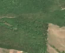
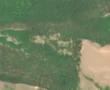

14,2 ha de pădure schimbată lângă Zalnoc
Între vara lui 2025 și 30 aprilie 2026, pe aproximativ 14,2 ha de pădure din comuna Bobota, lângă Zalnoc, județul Sălaj, imaginile Sentinel-2 arată că vegetația a dispărut sau s-a schimbat puternic. În registrul public există o autorizație de tăiere pentru acest loc.
Autorizația de tăiere
probabil cu autorizație
Am găsit o autorizație de tăiere pentru locul ăsta, dar registrul nu ne lasă să confirmăm că acoperă exact tăierea pe care o vedem. Amenajamentul nu publică harta parcelei autorizației, deci nu știm exact unde e. De cele mai multe ori o acoperă.
Ce se vede în poze: În poza detaliată zona marcată era acoperită de pădure deasă. În poza «după» pădurea este în mare parte la locul ei, dar apar mici pete deschise la culoare în mijloc și în stânga, ca și cum unii copaci ar fi fost scoși. Nu se vede o tăiere rasă clară, cu teren gol pe o suprafață mare.


Înainte și după: Copernicus Sentinel-2, 10 m pe pixel, conturul zonei cu portocaliu. Poza detaliată (Esri World Imagery) e de acum 1–4 ani: arată ce era acolo înainte, nu tăierea.
Pe scurt
- Identificator
- 20260430_47385_22716
- Locul
- Zalnoc, comuna Bobota, județul Sălaj (SIRUTA 140280)
- Coordonate (centru)
- 47.38526, 22.71606 · Google Maps · OpenStreetMap
- Suprafața
- 14,2 ha (din pixeli de 10 m; ± câțiva pixeli pe margine)
- Pădurea întreagă
- în vara lui 2025 (de atunci, nori sau iarnă)
- Prima imagine cu schimbarea
- 30 aprilie 2026
- Imagini în care se vede schimbarea
- 5
- Cât de sigur e semnalul din satelit
- scăzută
- Autorizația cea mai apropiată
- APV 2400147301710 · Ocolul Silvic Codrii Sătmarului, valabilă 16 decembrie 2024 – 14 martie 2025, la 0 m de zonă
- Terenul
- în afara amenajamentelor silvice publicate (pășune, mal de apă sau pădure privată fără amenajament în registru)
- Pădure pierdută în jur, alți ani
- 2004, 2013, 2014 (Hansen)
- Garda Forestieră
- Oradea
Dacă vrei să verifici sau să sesizezi
- Pădurile din județul Sălaj sunt în grija Gărzii Forestiere Oradea, care controlează tăierile și dă amenzile.
- Autorizația găsită în zonă e emisă de Ocolul Silvic Codrii Sătmarului.
- Formularul Gărzii Forestiere Naționale primește sesizări și fără nume. Trimite linkul acestei pagini, coordonatele și pozele. Dacă tăierea e în desfășurare, sună la 112.
- Autorizațiile și transporturile de lemn se pot căuta în Inspectorul Pădurii.
Pagina arată ce se vede din satelit și ce scrie în registrul public; nu e o dovadă în sine.
Cum citezi zona
Linkul acestei pagini nu se schimbă. Dacă zona iese vreodată de pe hartă, pagina rămâne, cu data și cu ce știam despre ea.
Pădurea RO, zona 20260430_47385_22716: 14,2 ha, Zalnoc, comuna Bobota, județul Sălaj; schimbare văzută din satelit între vara lui 2025 și 30 aprilie 2026. https://iliemihai.github.io/padurea-ro/zona/20260430_47385_22716/ (consultat la [data]). Date: CC BY 4.0.
Datele zonei: GeoJSON · toate zonele: date deschise · licența CC BY 4.0.
Istoricul zonei pe hartă
Starea se poate schimba când registrul publică o autorizație sau când analistul vede poze mai bune. O ținem aici, ca un link citat să arate și ce spuneam atunci.
Pe hartă cel târziu din 5 noiembrie 2026.
- 5 noiembrie 2026 – azi · probabil cu autorizație
Detalii tehnice, pentru verificare
De ce acest nivel de încredere:
- văzută schimbată în 5 imagini diferite
- peste 3 ha
- ultima dată am văzut-o intactă în vara lui 2025 (de atunci, nori sau zăpadă)
- fără părerea AI
Ce a văzut analistul cu context: Sentinel-2 arată pete mici, deschise la culoare, în interiorul conturului, fără margini drepte și fără un luminiș mare. Suprafața mare de teren gol din dreapta exista deja în imaginea din 2025-08-28, deci nu face parte din schimbare. Autorizația APV (0 m, suprapunere 10%, valabilă 2024-12-16 – 2025-03-14) și coronamentul de 82% în 2000 sprijină ipoteza unei rărituri sau exploatări parțiale, dar dovezile vizuale sunt slabe.
- Placa Sentinel-2
- 34TFT
- NDVI de referință
- 0.84
- NBR de referință
- 0.6
- Scăderea în pădurea din jur
- 0.05
- Persistență
- 1.0
- NDVI / NBR după
- 0.476 / 0.17
- Analistul cu context (model)
- rarire · 0.4
Cum se calculează fiecare: metodologia.
Pune harta zonei într-un articol
Copiază codul în articol (merge în majoritatea site-urilor de știri). Sau pune doar linkul: WhatsApp, Facebook și X arată singure poza zonei.